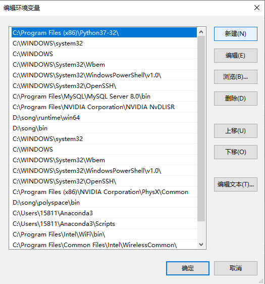

Home
Main Function
Experiment
Exam
Resource
Function Configuration
1.Download JDK
2.Install JDK
3.Environment Configuration
Environment Configuration
1. Click on System > Attribute.
2. Click Advanced system settings.
3. Go to the Advanced tab and click on Environment Variables.
4. Find system variable "path" and click it.

5. Click on Edit for User (or System) variables and add/modify:
PATH = d:\JAVA PATH\bin;
d is the drive where you installed the JDK
JAVA PATH is the path where you installed the JDK
Click confirm to exit the setting
Open command line and type "java --version" to test if you install JDK successfully
This is the whole process of function configuration of JDK